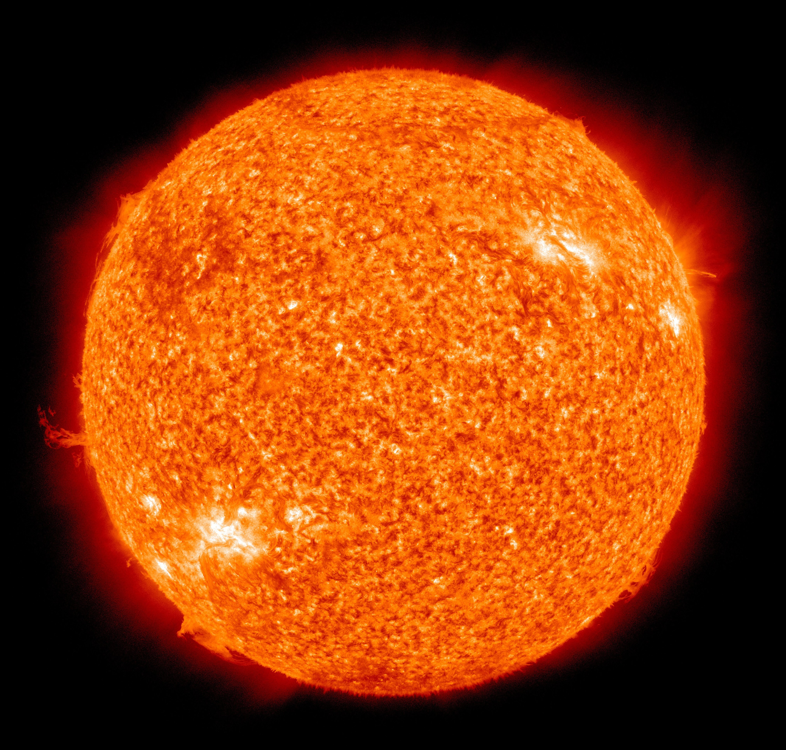

The Sun
The Sun is a massive celestial object making up 99.86% of all the mass in our solar system. The Sun produces massive amounts of energy through nuclear fusion, this energy makes it's way to the surface of the Sun and is radiated away through heat and light. Due to this nuclear fusion, the sun loses 5.5 million tonnes of mass every second, but the sun won't burn out for another 5 billion years. It produces energy for the entire solar system and everything in the solar system is anchored to the Sun's enourmous gravity well. On top of light and heat, the Sun sometimes produces solar flares and solar wind, which are explosions of high-energy plasma from the Sun's surface.

On Earth, the Sun affects us greatly as it provides all the energy on Earth, save for geothermal energy which makes up a puny fraction of Earth's available energy. The Sun may also harm us though, as solar flares can cause power outages and interfere with modern technology. The Earth's magnetic field protects it from most of these attacks however, so it's rare that a solar flare will affect your daily life. In the sky, the Sun not only shows itself, but shows other planets, moons, and comets. The Sun's light bounces off these objects making them visible to us. The Moon doesn't produce it's own light but rather is lit by the Sun.